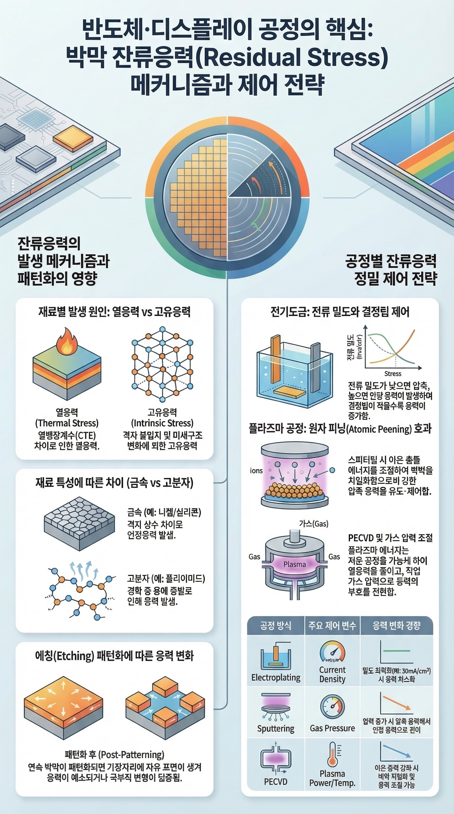
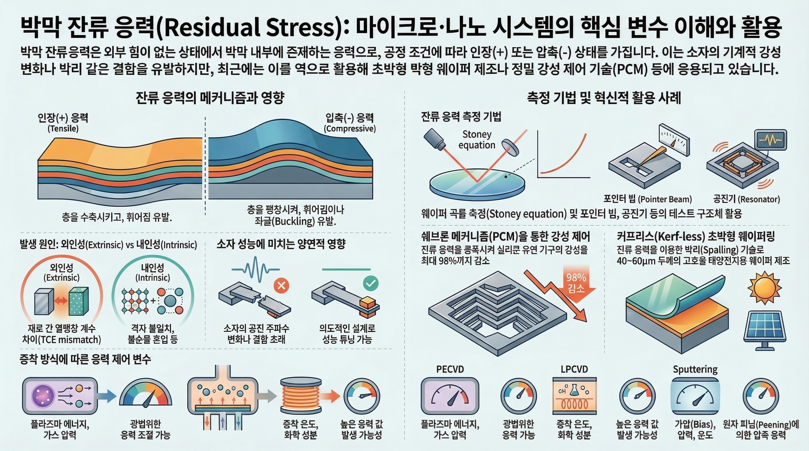

Core Overview
잔류 응력의 핵심 개념 및 시뮬레이션 기반 예측 분석


데이터 대기 중
유한요소해석(FEM) 및 물리 정보 신경망(PINN) 기반 예측 모델링에 대한 세부 방법론을 기다리고 있습니다.
잔류 응력의 핵심 개념 및 시뮬레이션 기반 예측 분석


유한요소해석(FEM) 및 물리 정보 신경망(PINN) 기반 예측 모델링에 대한 세부 방법론을 기다리고 있습니다.